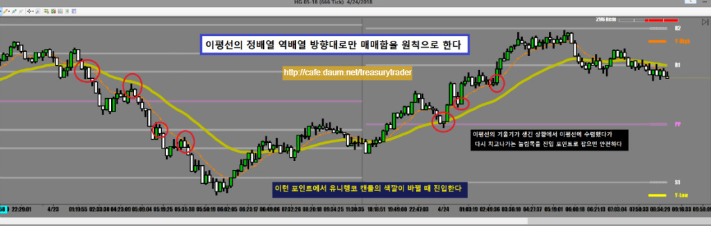
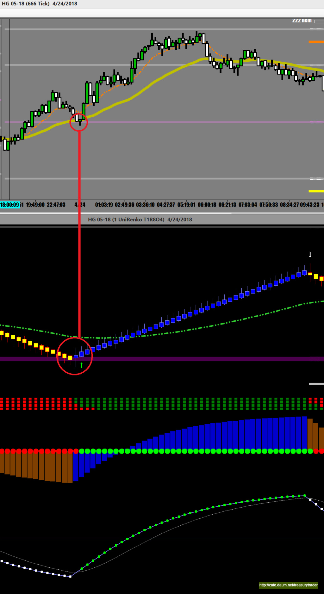
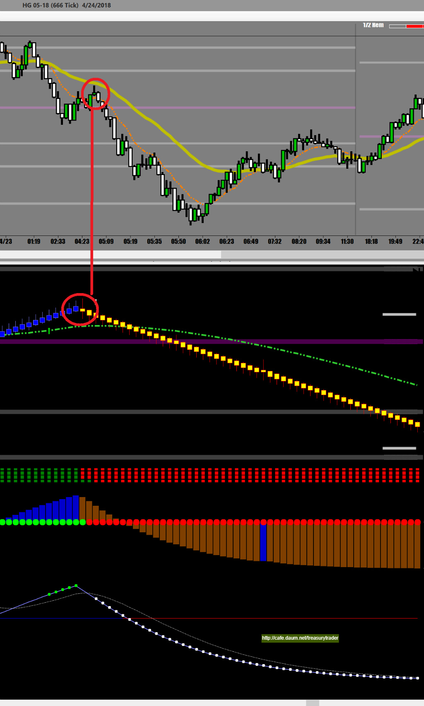

한국에서 해외선물을 매매하실 때 어려운 사항중에 하나가 시간대가 맞지 않는다는 것
날밤을 새우고 매매하기가 여간 어려운게 아니다
이런분들에게 좋은 선물이 바로 구리선물
구리선물은 한국보다 한시간 빠른 샹하이 마켓 오픈시간대인 오전 9시(한국시간) 전후
유럽 런던증시 오픈 시간대인 오후 4시(한국시간) 전후
그리고 미국증시 오픈하는 한국시간 저녁 9시(한국시간) 전후로
세번 크게 움직이기 때문에 밤늦은 시간대인 미국증시 오픈에 맞춰 매매하지 않아도 된다
오늘은 구리선물 매매기법중에 잘맞는 666틱과 이평선을 이용한 매매기법을 알아보자

각 선물마다 잘맞는 틱이 있다
어떤 ES 같은 경우 1200틱, SI는 1200볼륨챠트가 ZS의 경우 233틱 등등이다
구리의 경우 666 Tick이 보기에 좋고 매매신호 잡기가 수월하다
666틱 챠트로 매매할 경우 매매신호 잡는 기준을 10일 이평선 (EMA)과 34일 이평선(EMA)로 하면 좋다
위 챠트에서 보는것처럼 추세따라 진행하던 선물가가 조정받으면서 이평선까지 밀린 후에
다시 재반등 하는 순간이 진입시점이다. 아주 기본적인 방법이다
두개의 이평선을 가지고 매매할 때 이평선은 매매시점만 잡아주는게 아니라
현재 이평선의 배열상태(정배열/역배열)을 보여주므로 어느쪽으로 진입할지를 알려주는 기본지표가 되고
두 이평선 사이의 간격이 벌어진 이격도는 역매매를 할 수 있는 기회를 주기도 한다
반드시 기억할것은 언제나 이평선 배열 방향대로만 매매하는게 원칙이라는것 !!!
유니렝코바와의 연계매매
유니렝코바 챠트로 매매할 경우 색깔 바뀌면 들어가고 나오면 되는 매매방법인데
구리처럼 심하게 요동치는 선물의 경우 움직임이 요란하다보니 모든 색깔전환에 다 들어가면 윕쏘에 너무 자주 걸리게 된다
그러므로 위에 표시된 자리에서 색깔 바뀔 때 들어가면 승률이 매우 높아진다


진입하기에 최고로 좋은 자리는
중요 이평선과 피봇의 지지(저항)이 겹치는곳에서
이평선 배열방향(추세방향)쪽으로 신호가 뜰 때
특히 이런 혈자리에서 좋은 캔들 패턴(Doji, Pin Bar, Engulfing)까지 같이 뜨면 최고!!
이런 100점짜리 신호가 장중에 한두번은 꼭 나오기 때문에
무조건 참고 또 참고 기다리면 된다
전에 화상을 자주 입어서 트라우마가 생기신분들은
무조건 챤스가 올 때까지 매매하지말고 기다리는게 상책이다
긴가민가할 때 들어갔다가 코피 터지고 덕분에 트라우마가 생긴 분들은
위에 설명한 그런 혈자리가 뜰때까지 무적권 기다려야 한다
그래서 한번 두번 세번 자꾸 성공한 매매가 되고나면 잃었던 자신감이 붙기 시작하고
그래야 단타매매를 계속할 수 있게된다
연이은 손실 매매로 인한 자신감의 상실은 성공을 막는 커다란 장애물이다
이것을 극복하기 위해
위에 설명한 방법대로 거의 완벽한 챤스가 올때까지 참고 기다리며
한방을 노리는 저격수같은 훈련이 꼭 필요하다